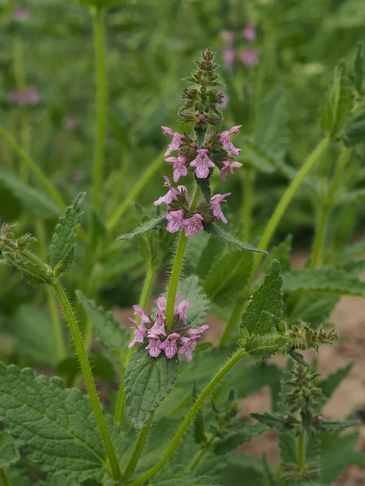

农作物与经济植物 · 植物界
甘露子 Stachys affinis

唇形科多年生草本，地下块茎螺旋状如宝塔，脆嫩可腌渍，是中国传统酱菜“宝塔菜”的原料，原产中国华北。
- 分类
- 门被子植物门纲木兰纲目唇形目科唇形科属水苏属
- 栖息环境
- 温暖湿润的菜园、田边与房前屋后，喜疏松沙壤土
- 地理分布
- 原产中国华北与西北，中国南北各地栽培，欧美亦有引种
- 保护级别
- 暂无评估；栽培作物，地方品种多样
物种志
甘露子为唇形科水苏属多年生草本，株高 30–60 厘米，茎方形，被短毛。叶对生，卵形，边缘有锯齿。地下具匍匐茎，先端膨大成螺旋状块茎，长 2–4 厘米，白色至淡黄色，节间缢缩如串珠。轮伞花序腋生，花冠淡紫或白色，唇形，花期 7–8 月；小坚果黑褐色。
甘露子原产中国华北与西北，各地多有栽培，块茎形似宝塔或蚕蛹，故有“宝塔菜”“草石蚕”之称。块茎质脆味甜，可鲜食、炒食，更多用于腌渍酱菜，是北方酱菜中的经典品种；全草入药，有祛风利湿、活血散瘀之效。栽培喜温暖湿润、疏松肥沃的沙壤土，以块茎繁殖，秋季地上部枯萎后掘取块茎，留存小块茎作种。它适应性强，房前屋后零星种植即可丰收。
形态与习性
- 原产地中国华北与西北地区
- 株高30–60 厘米，茎方形被短毛
- 块茎螺旋状，长 2–4 厘米，形如宝塔
- 用途腌渍酱菜、炒食，全草入药
- 栽培喜温湿疏松沙壤土，块茎繁殖
- 采收秋末地上部枯萎后掘取块茎
趣味知识
- 甘露子的块茎呈螺旋状，节间缢缩像一串小珠子，因此得名“宝塔菜”。
- 腌渍后的甘露子脆嫩爽口，是北方酱菜铺里的传统品种。
- 它靠地下匍匐茎蔓延，种下几块茎就能长满一小片，几乎不需打理。
- 块茎在土中越冬，来年春天自行萌发，常被当作“懒人菜”种植。